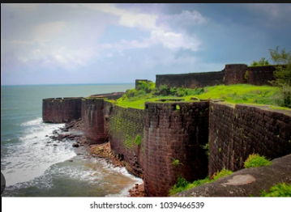
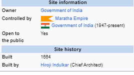

Sindhudurg Fort (Marathi pronunciation: [sin̪d̪ʱud̪uɾɡ]) is a historical sea fort located in Arabian Sea near the Konkan region of Maharashtra in Western India. The fort, commissioned by Chhatrapati Shivaji, was constructed between 1664 and 1667. The fort lies off the shore of Malvan taluka of the Sindhudurg District in the Konkan region of Maharashtra, 450 kilometres (280 mi) south of Mumbai.It is a protected monument under the Archaeological Survey of India.
Sindhudurg island-fort was built under Shivaji I, the founder of the Maratha Empire. The fort's foundation stone was laid on 25 November 1664. Construction was supervised by Hiroji Indulkar who was took assistance from Portuguese engineers of Goa. The fort's main objective was to counter the rising influence of English, Dutch, French and Portuguese merchants in the Konkan coast, and to curb the rise of Siddhis of Janjira. The fort was built on a small island known as the Khurte island
 |
[Chatrappati Shivaji Maharaj] had brought 200 Vaddera people to build this fort. Over 4,000 pounds of lead were used in the casting and foundation stones were firmly laid down. Construction started on 25 November 1664. Built over a period of three years (1664-1667), the sea fort is spread over 48 acres, with a two-mile (3 km) long rampart, and walls that are 30 feet (9.1 m) high and 12 feet (3.7 m) thick. The massive walls were designed to serve as a deterrent to approaching enemies and to the waves and tides of the Arabian Sea. The main entrance is concealed in such a way that no one can pinpoint it from outside.[citation needed] The number of permanent residents living in the fort has been in decline since its abandonment. Most residents have moved out due to inadequate employment opportunities but some families remain. The fort is closed for tourists during rainy season due to high tides. |